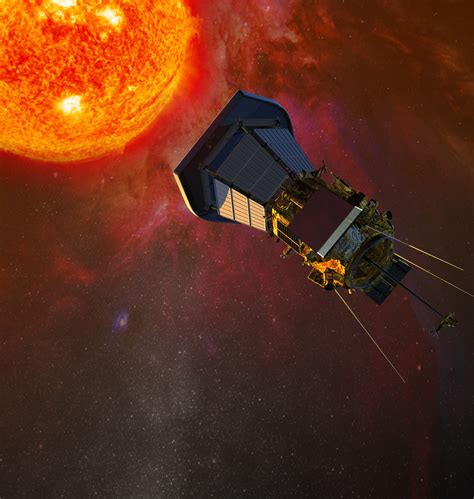

Parker Solar Probe

NASA's Parker Solar Probe is on a mission to "touch the
Sun." The spacecraft is flying closer to the Sun’s surface
than any spacecraft before it. The mission will revolutionise
our understanding of the Sun.
1.Parker will fly more than seven times closer to the Sun than
any spacecraft.
2.Over seven years, the spacecraft will complete 24 orbits
around the Sun.
3. its closest approach, the spacecraft will come within
about 3 9 million miles (6.2 million kilometres) of the Sun.
It has been nearly 60 years since the “Solar Probe”
Concept was introduced.In 2015, the critical design review
took placed.after the integration and testing during 2016-2017
the parker solar probe finally was launched in the year 2018.
NASA’s Parker Solar Probe launched on
Aug 12,2018 aboard a United Launch Alliance Delta IV
Heavy rocket
In order to unlock the mysteries of the corona, but also
to protect a society that is increasingly dependent on
technology from the threats of space weather, we will send
Parker Solar Probe to touch the Sun.
-
Trace the flow of energy that heats and accelerates the solar
corona and solar wind.
-
Determine the structure and dynamic of the plasma and magnetic
fields at the solar wind.
-
Explore mechanisms that accelerate and transport energetic
particles.
Parker Solar Probe will swoop to within 4 million miles of
the Sun's surface, facing heat and radiation like no spacecraft
before it.
6 years 11 months
The Parker Solar Probe's mission is to study the sun in
unprecedented detail. The revolutionary solar probe became the
first spacecraft to "touch" the sun when it swooped inside the
sun's outer atmosphere, or corona, during its eighth flyby on
April 28, 2021, according to a statement from NASA (opens in new
tab).

"Well, I would suggest that Parker go to the library and read up on the subject before he
tries to write a paper about it because this is utter nonsense," was the very first review
Eugene received for his paper.
Even Eugene Parker, solar and plasma physicist, Pioneering Astrophysicist, and founder of
the solar wind, was ridiculed for his idea which later revolutionized plasma physics.
But don't they say all brilliant ideas sound insane or absurd at first? One such idea was to
"touch the sun"
60 years into this incident, massive efforts were taken to bring this
thought to light.
Years of sleepless nights and hard work were put into the design of the probe.
A spacecraft as big as the size of a car was assembled.
The decision of the decade (box)
NASA scientists were put in a tough spot when their brainstormed ideas lead to a huge
conundrum. VENUS VS SATURN! They had to use the gravitational pull of a planet, yet didn't
know which. After a series of debates and quarrels, they made the decision of the decade,
fixed the Orbit of Venus and the rest is history.
The most awaited day in space history arrived, on August 12th, the day their successive
hard
work turned to triumph, the day we got one step closer to the future, and the day The Parker
Solar Probe was launched. Although the launch was delayed by a day, it didn't reduce the
hopes they had.
The launch was a huge success, the probe Slowly but steadily got fixed
in orbit and then in 2018, it made its first encounter with the sun, making it the most
spectacular event.
The next perihelion took place twice in the year 2019, greatly in 2020 and quarts in 2021.
But history was written in the 8th perihelion when for the first time in human history a
man-made object touched the hottest star in our solar system.
The Parker solar probe made its way through the corona, the atmosphere
hotter than the surface of the sun itself, and collected some curial data which would
explain the questionable phenomenons of scientists. As the perihelion increased, the speed
of the probe increased at the rate of 125 miles per second, reaching as far as 3.83 million
miles in the awaiting 25th revolution
Drop of Future
It is predicted that the solar probe mission will finally halt in the year 2025 after having
a total count of 25 perihelions. By then, our hopes are that we will have achieved the
impossible.